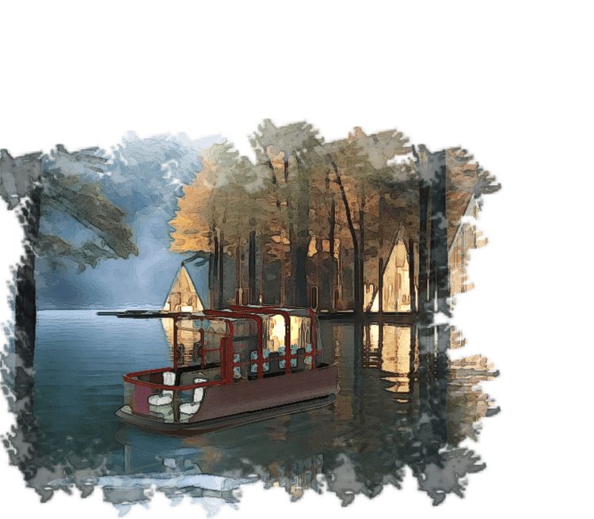
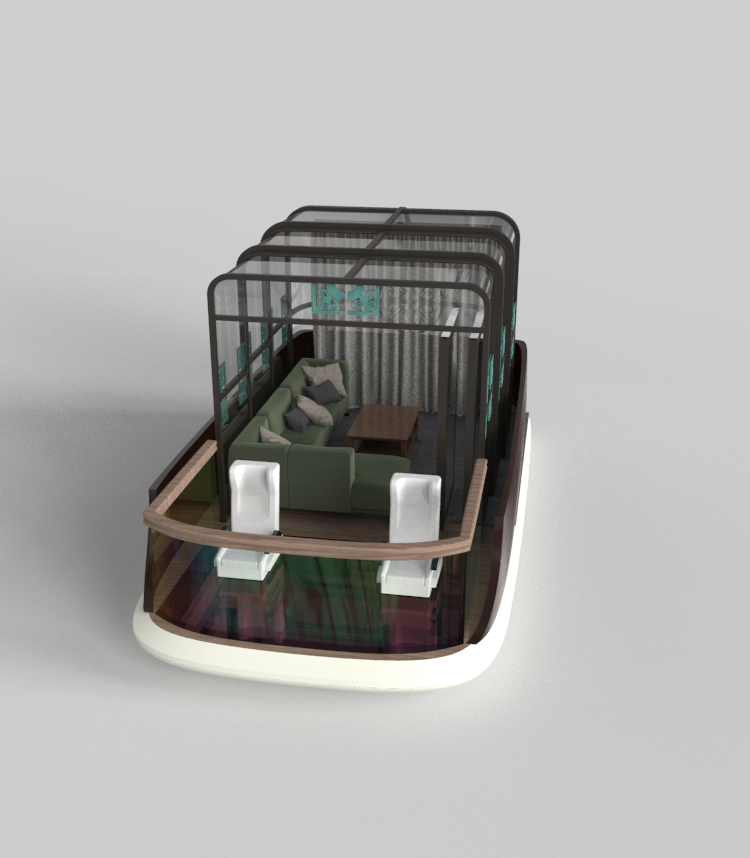
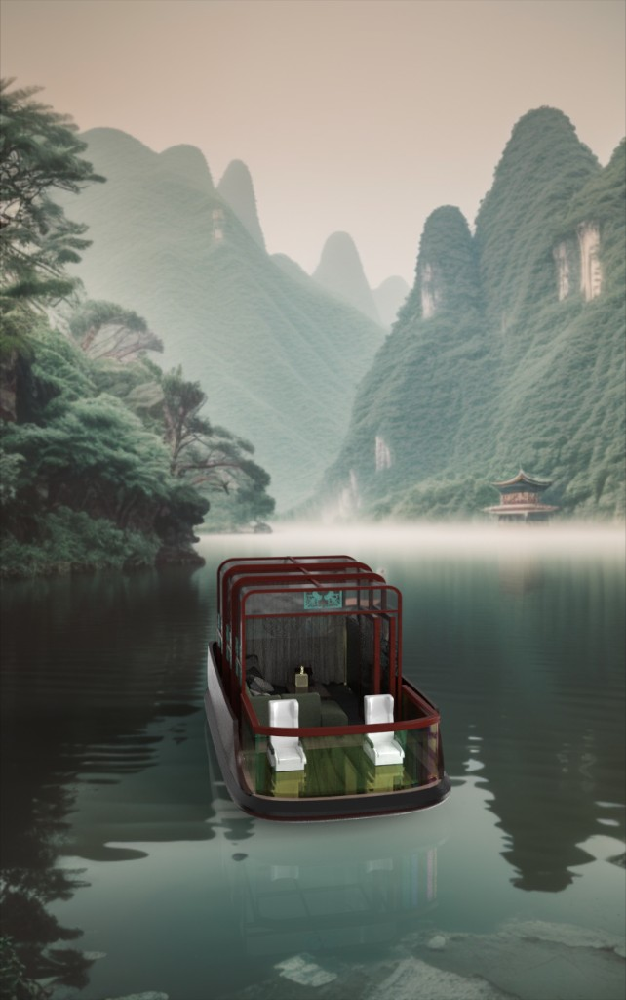
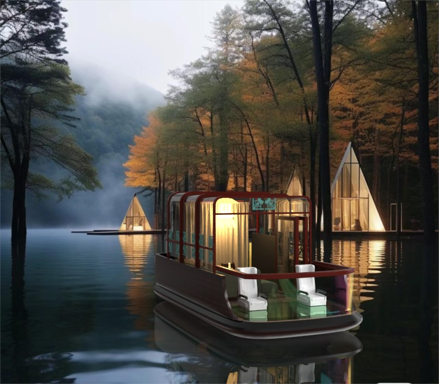
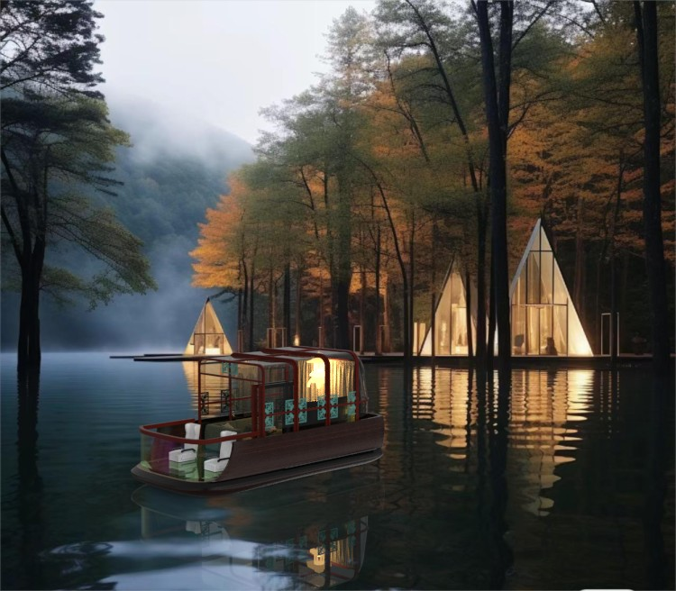
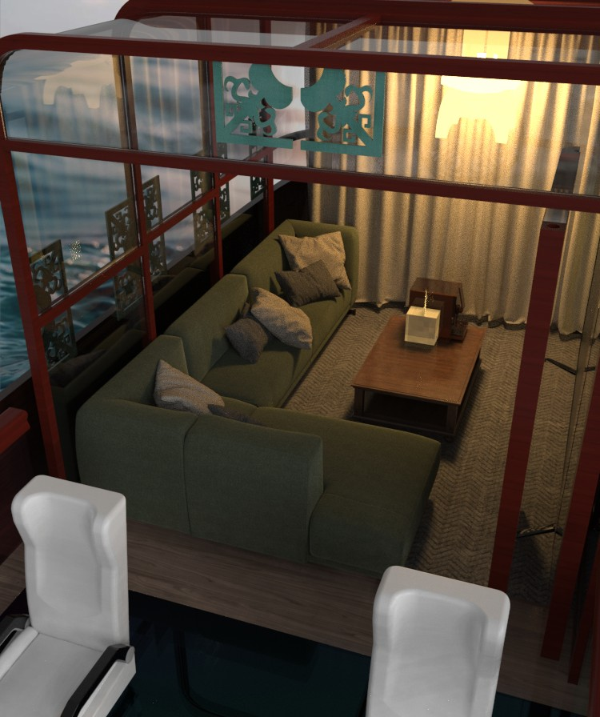
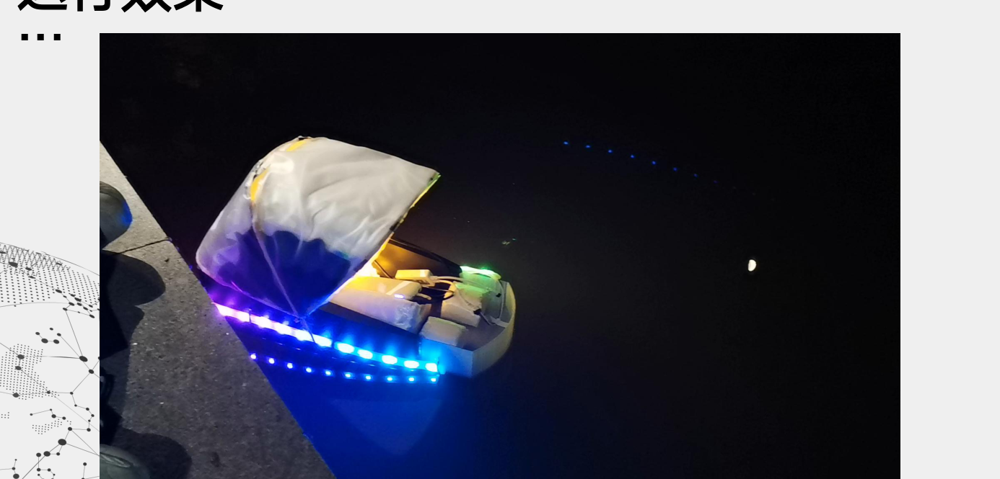

无人艇
Unmanned Surface Vehicle
景区观光无人艇：从景区场景缺口、竞品缺口出发，用三版迭代把产品从「游艇」改成「可变空间观光载具」，并落到新的船体、开合机构、内舱人机和商业模型。
01 / 09
定义：一艘船，两套空间，两套场次
不是做无人船技术科普，而是给景区做观光产品：白天能看水、晚上能看灯、雨天能封闭。


02 / 09
发现：景区要的不是把人送一圈，而是留下来
后疫情水域景区成为文旅爆发点。年轻人要的是沉浸、可拍照、私密，不是坐在封闭舱里从 A 到 B。家庭要能看水，情侣要半私密，商务要不被围观。


03 / 09
决策：三版不是改造型，是推翻产品假设
从全封闭游艇到半开放观光艇，每一步失败都指向同一个产品结论：船舱是体验容器，不是造型目标。
豪华封闭舱，像游艇
梯形压空间，主任务是看和走，不能这么挤
常规全封闭游艇
没记忆点，全封闭景区不好运营、造价也高
全封闭 / 全开放二选一
半开放 + 可折叠顶棚 + 玻璃船头，空间可变

V1 为什么被否
梯形舱体压缩了内部空间，乘客坐下后视野受限，走动也不方便。核心任务是看水和走动，这个布局让主任务变难。

V2 为什么被否
外形过于常规，缺少新意和特点；全封闭在景区运营里可行性低，通风、登离、造价都是问题。

04 / 09
功能：每一项都接到用户和场景
功能服务于三种人和两套场次：观光 / 商务，日间 / 夜间。驾驶保留自动、遥控、手动三模。


05 / 09
造型：按产品原则重新设计船体
课上 V3 定了方向。重建时从比例、登离、视线和开合出发：更低更长，开合是整侧舱壁，下半部仍是船体。

06 / 09
模型：最终外观以新建模为准
这一帧是工业设计的视觉核心。整页应放你后来重建的艇：白天、夜间、三视图、开放/闭合对比。




07 / 09
机构：开合是这艘船的核心产品开关
可变空间不是渲染里顶棚消失，而是有轨道、扇、框、排水。ADS 7650 滑轨导向，活动扇闭合成面，挡水檐处理进水。

开合机构的实现
ADS 7650 滑轨导向，活动扇沿轨道开合，闭合时形成连续舱壁；挡水檐与排水槽处理雨天进水，保证开合不是渲染效果而是可工程化结构。
08 / 09
人机与 CMF：工业设计不只外壳
分区是驾驶、坐、看水下、开合边界。人机看登离和防夹手。灯带算船体 CMF，不是 App。

人机与 CMF
驾驶区在前、 Lounge 在中、看水下玻璃在船头。CMF 以深木色船体、红色框架、青绿色花格和暖光为主，形成「现代中式」的景区识别。
09 / 09
验证与商业：能造、能开、能卖
样机验证开合和尺度；静水力看排水；景区缓流用 PE/复合材料。小批量近 4 万，量产可到 3 万。
